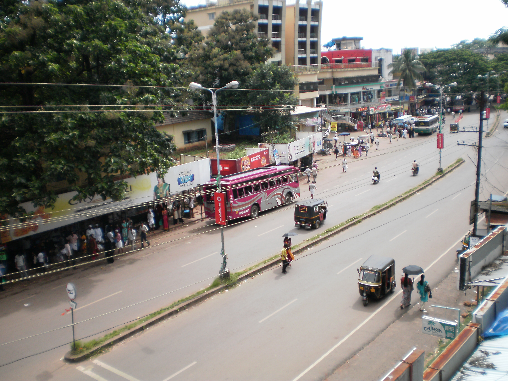
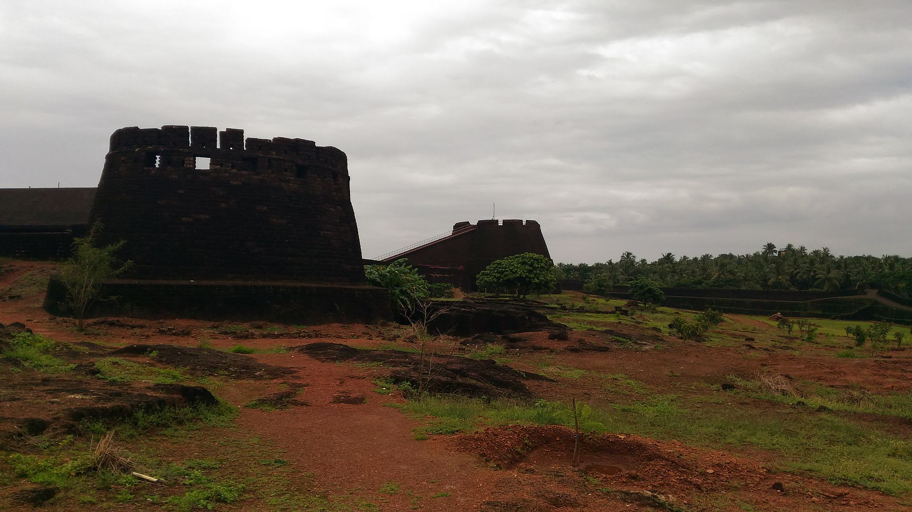
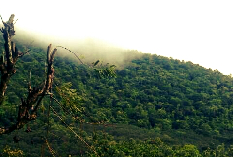
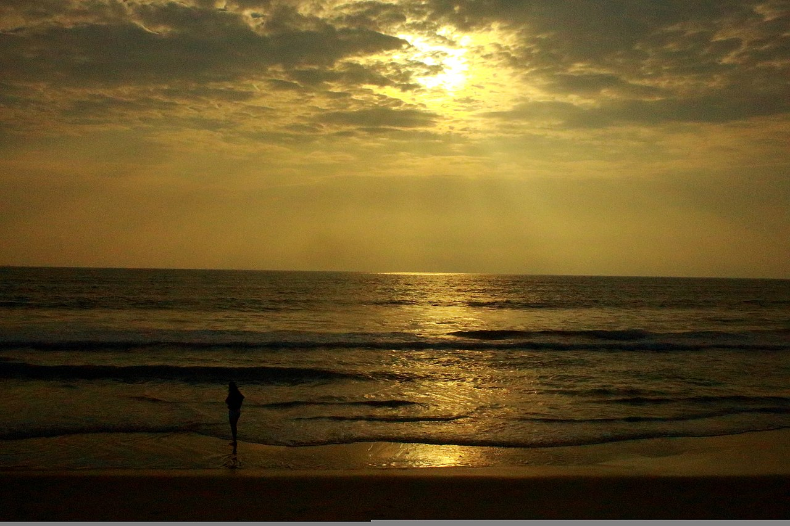

Kasargod
Kasaragod or Kaasrodu is a municipal town and administrative headquarters of Kasaragod district of Kerala state in India. Situated in the rich biodiversity of Western Ghats, it is known for the Chandragiri and Bekal Forts, Chandragiri River, historic Kolathiri Rajas, natural environment of Ranipuram and Kottancheri Hills, historical and religious sites like the Madiyan Kulom temple, Madhur Temple, Ananthapuram Lake Temple and Malik Deenar Mosque. It is located 50 km south of the major port city & a commercial hub Mangalore and 578 km north of state capital Thiruvananthapuram.

TOP DESTINATIONS

Ranipuram Hill

Bekal Fort

Malom Widlife
